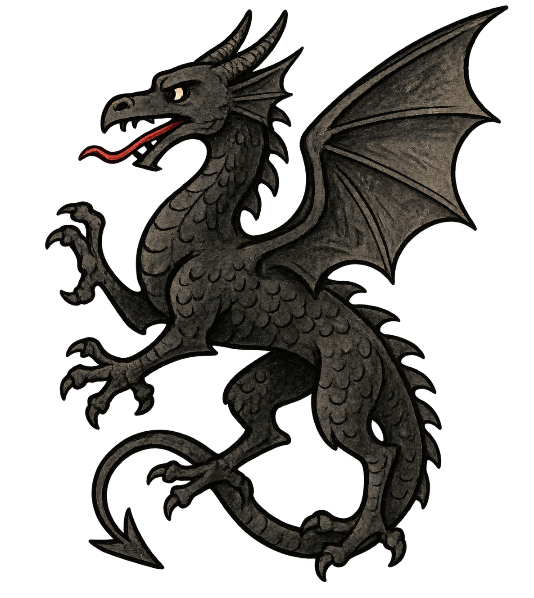

|
 
|
||||||||||||||||||||||||||||||||||||||||||||||||||||||||||||||||||||||||||||||||||||||||||||||||||||||||||||||||||||||||||||||||||||||||||||||||||||||||||||||||||||||||||||||||||||||||||||||||||||||||||||||||||||||||||||||||||||||||||||||||||||||||||||||||||||||||||||||||||||||||||||||||||||||||||||||||||||||||||||||||||||||||||||||||||||||||||||||||||||||||||||||||||||||||||||||||||||||||||||||||||||||||||||||||||||||||||||||||||||||||||||||||||||||
1.) Übersicht Celtigerns Wacht ist eine Grafschaft im Königreich Cenyr, die dem Haus Draig untersteht, einem mächtigen Adelsgeschlecht mit tiefer Verbundenheit zur Krone. Die Region wird von verschiedenen Adelshäusern verwaltet, doch die Draig, als Wächterhaus, spielen eine zentrale Rolle in der Verteidigung und dem Schutz der Grafschaft. Die Grafschaft zeichnet sich durch ihre strategische Lage, maritimen Schwerpunkte und ihre historischen Verbindungen zu den Crannath aus. 2.) Geschichte Die Geschichte von Celtigerns Wacht beginnt mit der Ankunft der Avallornier, einem Volk, das aus dem Westen floh, um den Kriegen und Zerstörungen ihrer alten Heimat zu entkommen. Nach einer langen und beschwerlichen Reise landeten sie im Osten und stießen auf das Volk der Crannath, das durch die Invasion der Norrnaigh am Rande des Untergangs stand. In diesem entscheidenden Moment griffen die Avallornier den Crannath zur Seite und halfen, die feindlichen Invasoren zurückzuschlagen. Unter der Führung des legendären Celtigern, Bruder des späteren ersten Königs von Cenyr, gründeten die Avallornier in diesem Land eine neue Heimat. Die Region, die später zu Celtigerns Wacht wurde, war das erste Gebiet, das sie besiedelten. Celtigern spielte eine Schlüsselrolle in der frühen Verteidigung der neu gegründeten Siedlungen und in der Allianz mit den Crannath. 2.a) Namensgebung der Provinzen Die Provinzen der Grafschaft wurden nach Celtigerns Kindern benannt, um ihre Rolle in der Geschichte und der Erschaffung dieser neuen Nation zu ehren. Diese Namensgebung erfolgte jedoch erst später, als das Land offiziell aufgeteilt und den Adelsfamilien zugewiesen wurde. Die bedeutendste Region, Llamreis Ankunft, symbolisiert den Beginn der Reise der Avallornier. Hier landete Celtigern mit seinem Gefolge und gründete die erste Siedlung. Der Name erinnert an Llamreis, einen seiner Söhne, und an die Entschlossenheit und den Willen des Volkes, eine neue Heimat zu schaffen. Die östliche Inselgruppe, Rhonwens Tränen, wurde nach Celtigerns Tochter benannt und erinnert an die Trauer über die Zerstörungen, die über das Land der Crannath hereinbrachen. Diese Region, mit ihren unruhigen Gewässern und geschützten Buchten, wurde zu einem wichtigen strategischen Punkt im Seehandel und in der Verteidigung des Reiches. Gwendolyns Ufer, das westliche Gebiet, diente lange Zeit als Erweiterung von Llamreis Ankunft, bevor es dem Haus Gwyvern übergeben wurde. Die Region ist bekannt für ihre maritimen Schwerpunkte und ihre wichtige Rolle im Handel. 2.b) Gründung der Grafschaft Im Norden, an der Grenze zur nächsten Grafschaft, liegt Arthus Streben, benannt nach Celtigerns Sohn. Diese Provinz symbolisiert das Streben der Avallornier, die Crannath zu verteidigen und ihr Bündnis zu festigen. Nachdem Celtigern eine zentrale Rolle in der Verteidigung des Königreichs gespielt hatte, wurde die Grafschaft unter dem Namen Celtigerns Wacht formell gegründet und dem Haus Draig übertragen. |
|
|||||||||||||||||||||||||||||||||||||||||||||||||||||||||||||||||||||||||||||||||||||||||||||||||||||||||||||||||||||||||||||||||||||||||||||||||||||||||||||||||||||||||||||||||||||||||||||||||||||||||||||||||||||||||||||||||||||||||||||||||||||||||||||||||||||||||||||||||||||||||||||||||||||||||||||||||||||||||||||||||||||||||||||||||||||||||||||||||||||||||||||||||||||||||||||||||||||||||||||||||||||||||||||||||||||||||||||||||||||||||||||||||||||
3.) Kultur Die Menschen von Celtigerns Wacht sind tief mit ihrer Geschichte und der rauen Umgebung verwurzelt. Sie leben in einer Region, die vom Meer, den Bergen und den alten Traditionen der Avallornier geprägt ist. Besonders an den Küsten spielen Seefahrt und Fischerei eine zentrale Rolle, und die Bewohner gelten als mutige Seefahrer und geschickte Schiffsbauer. Ihre Gemeinschaften sind stolz auf ihre Traditionen und die enge Verbindung zu den Crannath, einem alten Volk, dem sie einst zur Seite standen. Die Kultur der Grafschaft legt großen Wert auf Ehre, Loyalität und Pflichtbewusstsein. Die Menschen verehren die Göttin Nimue, die Schutzpatronin des Meeres, und pflegen ein tiefes spirituelles Leben, das eng mit ihrer Umgebung verbunden ist. Viele junge Männer und Frauen streben danach, sich im Dienst des Hauses Draig oder anderer Adelshäuser zu beweisen, da das Rittertum und der Schutz des Landes einen hohen Stellenwert haben. Handwerk, insbesondere die Metall- und Holzverarbeitung, spielt ebenfalls eine wichtige Rolle im Alltag der Menschen, und ihre Arbeiten spiegeln die Kunstfertigkeit und die lange Geschichte der Region wider. Die Reitkunst ist in dieser Region dank des Wirkens des Hauses Gwefrydd besonders beliebt. Diese gelten als die besten Uchelwyr (berittene Ritter) des Landes und haben durch ihre Gilde Rhosmeres Rösser die Region stark beeinflusst. Viele streben danach, unter ihrem Banner zu reiten und die stolze Kavallerietradition der Region fortzuführen. Der heilige Coed Y Felin Wald spielt ebenfalls eine bedeutende spirituelle Rolle, da er viele Ahnenbäume beherbergt und ein wichtiger Ort für die Druiden der Region ist, die den Wald als heiligen Ort verehren. 4.) Politik
5.) Verwaltung 5.a) Verwaltungsstruktur
5.b) Wirtschaft Die Wirtschaft von Celtigerns Wacht ist stark durch ihre geografische Lage und natürlichen Ressourcen geprägt. Die Seefahrt spielt eine zentrale Rolle, insbesondere in den Küsten- und Hafensiedlungen, wo Fischerei, Handel und Schiffsbau die wichtigsten Wirtschaftszweige darstellen. Die Grafschaft ist ein wichtiger Knotenpunkt für den maritimen Handel, und die geschickten Schiffsbauer der Region sind für ihre robusten und hochwertigen Schiffe bekannt, die nicht nur für den Handel, sondern auch für militärische Zwecke genutzt werden. Im Landesinneren und in den Bergregionen dominieren der Bergbau und die Holzverarbeitung. Die Siedlungen in den Bergen fördern wertvolle Erze, darunter das seltene Tenebrium, ein Erz, das für seine magienegierenden Eigenschaften geschätzt wird. Die dichten Wälder liefern zudem Holz, das für den Bau, die Herstellung von Werkzeugen und den Schiffsbau verwendet wird. Landwirtschaftlich ist die Grafschaft auf den Anbau von Getreide, Gemüse und Futterpflanzen spezialisiert, wobei auch die Pferdezucht durch das Haus Gwefrydd eine besondere Rolle spielt. Die Gwefrydd betreiben die berühmte Gilde Rhosmeres Rösser, die die besten Reit- und Arbeitspferde des Landes züchtet und damit nicht nur die lokale Wirtschaft, sondern auch den militärischen Sektor entscheidend beeinflusst. 5.c) Verteidigung Die Verteidigung der Grafschaft Celtigerns Wacht ist aufgrund ihrer rauen Geografie und der ständigen Bedrohungen eine große Herausforderung. Die Küsten sind oft das Ziel von Piraten, die den Handel auf See stören und immer wieder Überfälle auf kleinere Siedlungen und Handelsschiffe verüben. Auch die gefährlichen Versunkenen, amphibische Untote, die in den Tiefen des Meeres lauern, stellen eine ständige Gefahr dar. Hinzu kommen Meeresgeister und andere unheilvolle Kreaturen, die Schiffe auf mysteriöse Weise verschwinden lassen oder Fischer in die Tiefe ziehen. Im Landesinneren sind die Wälder und Berge ebenfalls nicht frei von Gefahren. Waldkreaturen und unheimliche Wesen wie Grimmlinge machen die Wälder unsicher, während im Gebirge gefährliche Bestien und unbekannte Kreaturen lauern. Trotz der Präsenz von gut ausgebildeten Rittern, Knechten und den stolzen Uchelwyr-Kavalleristen des Hauses Gwefrydd, bleibt die Verteidigung der Grafschaft abseits der befestigten Wege schwierig. Reisende und Händler riskieren ständig, abseits der Hauptstraßen und Siedlungen von diesen Bedrohungen angegriffen zu werden. Die Verteidigung der Region erfordert ständige Wachsamkeit, und selbst die erfahrensten Kämpfer können nicht garantieren, dass alle Gebiete sicher sind. |
||||||||||||||||||||||||||||||||||||||||||||||||||||||||||||||||||||||||||||||||||||||||||||||||||||||||||||||||||||||||||||||||||||||||||||||||||||||||||||||||||||||||||||||||||||||||||||||||||||||||||||||||||||||||||||||||||||||||||||||||||||||||||||||||||||||||||||||||||||||||||||||||||||||||||||||||||||||||||||||||||||||||||||||||||||||||||||||||||||||||||||||||||||||||||||||||||||||||||||||||||||||||||||||||||||||||||||||||||||||||||||||||||||||
6.) Familien
|
||||||||||||||||||||||||||||||||||||||||||||||||||||||||||||||||||||||||||||||||||||||||||||||||||||||||||||||||||||||||||||||||||||||||||||||||||||||||||||||||||||||||||||||||||||||||||||||||||||||||||||||||||||||||||||||||||||||||||||||||||||||||||||||||||||||||||||||||||||||||||||||||||||||||||||||||||||||||||||||||||||||||||||||||||||||||||||||||||||||||||||||||||||||||||||||||||||||||||||||||||||||||||||||||||||||||||||||||||||||||||||||||||||||
7.) Geographie 7.a) Allgemein Die Geographie der Grafschaft Celtigerns Wacht ist stark von ihrer Küstenlage, den dichten Wäldern und dem massiven Gebirgszug geprägt, der die Region dominiert. Im Westen liegt Gwendolyns Ufer, eine Küstenregion mit vielen Hafenstädten und Siedlungen, die sich entlang der Strände und Buchten erstrecken. Diese Region ist besonders für ihre starke maritime Tradition bekannt und spielt eine zentrale Rolle im Handel und in der Fischerei. Vor der Küste liegt im Süden die kleine Inselrepublik Aberllan-Oilean, die sich als eigenständige Stadtrepublik behauptet und eine wichtige Handelsdrehscheibe darstellt. Das Herzstück der Grafschaft bildet die Region Llamreis Ankunft, benannt nach einem der Söhne Celtigerns. Hier erhebt sich ein imposanter Gebirgszug, der den größten Teil der Landschaft dominiert und für seine reichen Erzvorkommen bekannt ist. Die Berge sind von tiefen Tälern und gefährlichen Steilhängen durchzogen, was die Erschließung und den Handel zwischen den Regionen erschwert. Zahlreiche Bergbausiedlungen befinden sich in dieser Region, die das seltene Tenebrium fördern, ein Erz, das für seine magischen Eigenschaften geschätzt wird. Im Osten erstreckt sich die Inselgruppe Rhonwens Tränen, die aus mehreren großen und kleineren Inseln besteht. Auf der südlichen Insel liegt die Festung Castellbryn, die über das umliegende Gebiet wacht. Diese Region ist bekannt für ihre zerklüfteten Küsten und ihre strategisch wichtigen Seewege. Weiter nördlich, in der Region Arthus Streben, erstrecken sich ausgedehnte Wälder, die reich an Wildtieren und wertvollen Holzressourcen sind. Die Wälder bieten jedoch auch Schutz für unheimliche Kreaturen, und der Weg nach Norden, der durch Arthus Streben führt, gilt als unsicher. Insgesamt bietet Celtigerns Wacht eine vielfältige und raue Landschaft, die sowohl wirtschaftliche Chancen als auch große Gefahren birgt. Der Wechsel von Küstengebieten, fruchtbaren Ebenen und unzugänglichen Bergregionen macht die Grafschaft zu einem komplexen Gebiet, dessen Geographie das Leben der Bewohner stark prägt. 7.b) Baronien ...
8.) Flora & Fauna 8.a) Flora Die Flora von Celtigerns Wacht ist geprägt von den unterschiedlichen klimatischen und geografischen Bedingungen der Grafschaft, von den windgepeitschten Küsten bis hin zu den dichten Wäldern und den rauen Gebirgszügen. In den tiefer gelegenen Küstenregionen, wie Gwendolyns Ufer, finden sich vor allem robuste Gräser und widerstandsfähige Sträucher, die den salzigen Winden des Meeres standhalten. Küstenblumen wie Seeastern und Strandflieder blühen hier im Sommer, und in den feuchten, moorigen Ebenen wachsen Sumpfveilchen und Wollgras. In den Wäldern der Grafschaft, besonders in der Region Arthus Streben, dominieren uralte Eichen, Eschen und Birken das Landschaftsbild. Diese dichten, oft nebelverhangenen Wälder sind reich an Moos, Farnen und Flechten, die sich über die Bäume und den Waldboden ausbreiten. Die Ahnenbäume im heiligen Coed Y Felin-Wald sind von besonderer spiritueller Bedeutung und werden von Druiden als heilige Orte verehrt. Hier wachsen auch seltene Pflanzen und Heilkräuter, die von Heilern und Kräuterkundigen hochgeschätzt werden. In den Bergregionen von Llamreis Ankunft ist die Vegetation karger. Die steilen Hänge und schroffen Klippen sind mit Heidekraut, Bergthymian und Steinbrech bedeckt, während in den höheren Lagen alpine Pflanzen wie Silberdisteln und Enzian wachsen. Die Flusstäler, die sich durch die Berge schlängeln, bieten fruchtbarere Böden, in denen wilde Kräuter und Beerensträucher gedeihen. Besonders in den tieferen Tälern, wo die Siedlungen nahe am Gebirge liegen, nutzt die Bevölkerung die Kräuter und Pflanzen der Bergwelt für Heilmittel und magische Tränke. 8.b) Fauna Die Fauna von Celtigerns Wacht ist ebenso vielfältig wie die Landschaften, die die Grafschaft prägen. Entlang der Küstenregionen von Gwendolyns Ufer und den Inseln von Rhonwens Tränen sind zahlreiche Meeresvögel heimisch, darunter Möwen, Kormorane und Seeschwalben, die in den Klippen nisten. Die Gewässer selbst sind reich an Meereslebewesen wie Robben, Fischen und Delfinen, die von den Bewohnern gefangen und genutzt werden. Gelegentlich werden jedoch auch unheimliche Kreaturen wie die Versunkenen gesichtet, die die Küstenregionen unsicher machen. In den dichten Wäldern von Arthus Streben leben eine Vielzahl von Wildtieren, darunter Hirsche, Wildschweine und kleinere Säugetiere wie Eichhörnchen und Füchse. Diese Wälder sind jedoch nicht nur Heimat friedlicher Tiere – auch gefährlichere Kreaturen wie Grimmlinge und andere unheimliche Wesen machen die abgelegenen Waldgebiete unsicher, was Reisende und Jäger oft in Gefahr bringt. Die Wälder sind außerdem ein beliebtes Jagdgebiet für die lokalen Adelshäuser, die regelmäßig Jagden auf das Wild abhalten. In den Bergen von Llamreis Ankunft und den umliegenden Hochebenen sind robuste Tierarten beheimatet. Bergziegen, Falken und sogar Luchse sind in den höheren Lagen zu finden. Die abgeschiedenen Bergtäler bieten auch Lebensraum für größere Raubtiere wie Wölfe, die gelegentlich Herden angreifen und für die Bewohner der Bergsiedlungen eine ständige Bedrohung darstellen. Sagen berichten außerdem von geheimnisvollen Berggeistern und noch gefährlicheren Kreaturen, die in den tiefen Höhlen und Schluchten der Gebirgskette lauern sollen. 8.c) Bedrohliche Tiere Der Aerdrith ist eine Zwergwyverngattung, die kaum die Größe eines Braunbären erreicht, aber dennoch groß genug ist, um Schafe oder Ziegen zu reißen. Diese Kreaturen nisten tief in den Bergen von Llamreis Ankunft und bevorzugen abgelegene, felsige Gebiete, wo sie ihre Jungen aufziehen. Trotz ihres furchterregenden Aussehens sind sie für gewöhnlich scheu und meiden den Kontakt mit Menschen, es sei denn, sie fühlen sich bedroht oder in die Enge getrieben. Der Aerdrith besitzt die Fähigkeit, ätzende Säure zu speien, die schwere Verbrennungen verursachen kann. Aufgrund dieser Fähigkeit werden sie in der Region oft fälschlicherweise als Drachen bezeichnet und als Patrontiere des Hauses Draig angesehen. Dieser Glaube ist jedoch ein Missverständnis, das von den Draig selbst klar verneint wird. Tatsächlich gehören die Aerdrith zur Gattung der Ornithosaurier, flugfähige, reptilienartige Kreaturen, die nichts mit den sagenhaften Drachen zu tun haben. Obwohl sie gefährlich wirken, stellen Aerdrith nur selten eine direkte Bedrohung für die Menschen dar, solange man ihre Nester meidet. Der Faerog ist eine seltene Bergwolfsgattung, die einst als Patrontiere der Crannath verehrt wurden. Diese majestätischen Wölfe waren in alten Zeiten heilig und standen unter dem Schutz der Crannath Druiden, bis sie zur Zielscheibe der Ulfhednare wurden – Anhänger des Gottes Zatrach, die es sich zur Aufgabe gemacht hatten, die Faerog zu jagen und als Opfergaben darzubieten. Durch diese brutale Jagd wurde der Bestand der Faerog dramatisch reduziert, und bei der Ankunft der Avallornier war ihre Population bereits stark dezimiert. Heute gelten die Faerog als geschützte Tiere, und es ist ein seltenes und glückliches Ereignis, einem dieser prächtigen Wölfe in freier Wildbahn zu begegnen. Sie sind äußerst menschenscheu, vermeiden den Kontakt und ziehen sich in die entlegenen Gebirgsregionen zurück, die ihr Territorium bilden. Wenn jedoch Menschen oder andere Kreaturen in ihr Jagdrevier eindringen, können sie äußerst territorial und gefährlich werden. In einigen Fällen haben sie sogar Menschen getötet, oft dann, wenn ihnen Gebirgstrolle ihre Beute streitig machen. Trotz dieser Gefahr werden die Faerog respektiert und weitgehend in Ruhe gelassen, da ihre Rückkehr als Symbol für das Gleichgewicht der Natur in den Bergen gilt. 8.d) Unnatürliche Kreaturen Die Grimlinge sind eine ständige Gefahr in den Wäldern und Bergen von Arthus Streben und Llamreis Ankunft. Diese kleinen, bläulich-hellhäutigen Kreaturen überfallen häufig Dörfer und Reisende, wobei sie primitive Waffen und erbeutete Ausrüstung verwenden. Sie leben in Clans und lauern bevorzugt in abgelegenen Gebieten, wo sie Hinterhalte legen und Chaos verbreiten. Besonders gefährlich sind sie für jene, die sich zu weit abseits der Wege wagen. Die Ognir, im Volksmund als Oger bekannt, sind große, furchteinflößende Kreaturen, die in den Bergen und Wäldern von Celtigerns Wacht hausen. Mit ihrer massiven Körpergröße und rohen Kraft übertreffen sie gewöhnliche Trolle und sind oft Anführer von Grimnak-Clans. Diese gewaltigen Wesen terrorisieren Dörfer, fordern Tribute oder richten Verwüstungen an, wenn ihre Forderungen nicht erfüllt werden. Sie bevorzugen schwere Waffen wie Keulen und Bäume, die sie mit brutaler Effizienz einsetzen. Ihre Unberechenbarkeit und Zerstörungswut machen sie zu einer ständigen Gefahr für die Region. Die Nachzehrer sind eine besonders unheimliche Form von Vampiren, die sich in Celtigerns Wacht heimlich unter den Menschen bewegen. Als Einzelgänger arbeiten sie oft als Totengräber oder Henker und bevorzugen den Rückzug in Friedhöfen oder Grüften. Anstelle von frischem Blut ernähren sie sich von verwesendem Fleisch, und wenn keine Leichen verfügbar sind, töten sie ihre Opfer, um später deren Körper zu verzehren. Sie agieren äußerst unauffällig und meiden Aufmerksamkeit, was sie zu einer schwer greifbaren, aber gefährlichen Bedrohung in der Grafschaft macht. Die Hornlinge sind wilde, goblinartige Kreaturen, die tief in den Wäldern und Bergen von Celtigerns Wacht leben. Sie sind dem Gott Zatrach, dem Gott der Jagd und Bestien, geweiht und besitzen tierische Merkmale wie Hörner oder Geweihe, die sie im Kampf und zur Jagd einsetzen. Ihre moosgrüne Haut hilft ihnen, sich perfekt in ihrer Umgebung zu tarnen, und ihre scharfen Instinkte machen sie zu geschickten Fährtenlesern und Fallenstellern. Die Hornlinge führen ein Leben, das sich vollkommen um die Jagd und das Überleben in der Wildnis dreht. Sie sehen jedes erlegte Tier als Geschenk ihres Gottes und halten oft Rituale ab, um Zatrach für ihre Beute zu danken. Die ältesten und stärksten unter ihnen tragen besonders große und komplizierte Geweihe, die als Zeichen von Macht und Erfahrung gelten. Trotz ihrer geringen Größe sind Hornlinge äußerst gefährlich und territorial, besonders in den entlegenen Regionen der Grafschaft. In Celtigerns Wacht sind die Meere und Küsten von düsteren Kreaturen durchdrungen, die unter dem Einfluss des finsteren Gottes Thraal stehen. An den Küsten und in verlassenen Ruinen trifft man auf die Versunkene, amphibische Zombies, die einst Seemänner oder Jünger Thraals waren. Diese aufgequollenen, verwesten Kreaturen streifen umher und machen Jagd auf Lebende, die sie in den Tod ziehen und anschließend verschlingen. Ebenfalls gefährlich sind die Sirenen, die in den Gewässern rund um Rhonwens Tränen hausen. Diese verführerischen, aber grausamen Kreaturen locken unvorsichtige Seefahrer mit betörendem Gesang in den Tod. Ihre wahre, monströse Gestalt, mit schuppigen Leibern und vampirischen Zähnen, enthüllen sie erst, wenn ihre Opfer keine Fluchtmöglichkeit mehr haben. In den tiefen Höhlen der Küste und auf verfluchten Schiffen lauern die Thraalkin, amphibische Krieger Thraals. Mit ihrer reptilienartigen Haut und messerscharfen Klauen bewachen sie die Ozeane und setzen den Willen ihres Meisters erbarmungslos durch. Sie sind besonders gefürchtet für ihre Schnelligkeit im Wasser und ihre übermenschliche Stärke. Besonders gefürchtet ist die Banshee der Kompassrose, eine geisterhafte Erscheinung in der Form einer schneeweißen Braut, die um das Wrack des gesunkenen Schiffes herumstreift. Jeder, der sie erblickt, ist dem Fluch der Kompassrose verfallen und soll innerhalb weniger Wochen sterben. Dieser gespenstische Fluch ist in der gesamten Region bekannt und sorgt dafür, dass sich kaum jemand in die Nähe des Wracks wagt. 9.) Trivia ... |
||||||||||||||||||||||||||||||||||||||||||||||||||||||||||||||||||||||||||||||||||||||||||||||||||||||||||||||||||||||||||||||||||||||||||||||||||||||||||||||||||||||||||||||||||||||||||||||||||||||||||||||||||||||||||||||||||||||||||||||||||||||||||||||||||||||||||||||||||||||||||||||||||||||||||||||||||||||||||||||||||||||||||||||||||||||||||||||||||||||||||||||||||||||||||||||||||||||||||||||||||||||||||||||||||||||||||||||||||||||||||||||||||||||


.png)